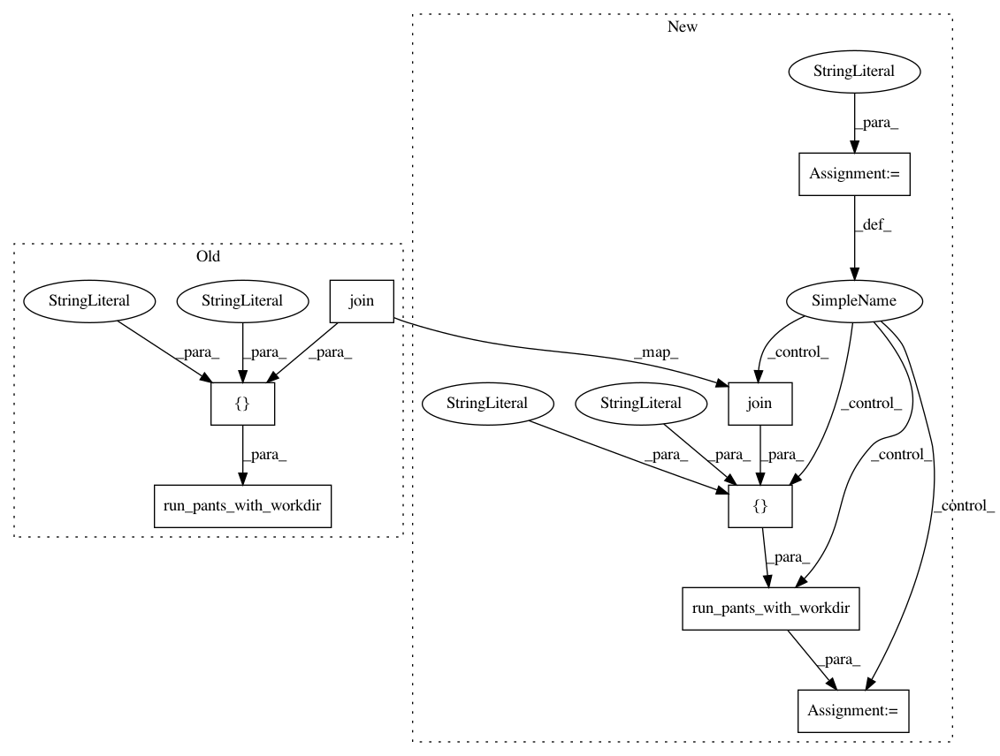

67925858cd5cdb1ec770c4e9aeeff288c80456fc,tests/python/pants_test/backend/jvm/tasks/test_junit_tests_integration.py,JunitTestsIntegrationTest,test_junit_test_successes_and_failures,#JunitTestsIntegrationTest#,188
Before Change
def test_junit_test_successes_and_failures(self):
with self.temporary_workdir() as workdir:
with self.source_clone("testprojects/src/java/org/pantsbuild/testproject/junit/mixed") as mixed:
pants_run = self.run_pants_with_workdir([
"test",
"--test-junit-failure-summary",
"--no-test-junit-fail-fast",
os.path.join(mixed, "tests", "org", "pantsbuild", "tmp", "tests"),
], workdir)
group = [
"org/pantsbuild/tmp/tests:tests",
"org.pantsbuild.tmp.tests.AllTests//test1Failure",
"org.pantsbuild.tmp.tests.AllTests//test3Failure",
After Change
def test_junit_test_successes_and_failures(self):
with self.temporary_workdir() as workdir:
mixed_tree = "testprojects/src/java/org/pantsbuild/testproject/junit/mixed"
with self.source_clone(mixed_tree) as mixed:
mixed_addr = os.path.join(mixed, "tests", "org", "pantsbuild", "tmp", "tests")
pants_run = self.run_pants_with_workdir(["test.junit",
"--failure-summary",
"--no-fail-fast",
mixed_addr],
workdir)
group = [
"org/pantsbuild/tmp/tests:tests",
"org.pantsbuild.tmp.tests.AllTests//test1Failure",
"org.pantsbuild.tmp.tests.AllTests//test3Failure",
In pattern: SUPERPATTERN
Frequency: 3
Non-data size: 8
Instances
Project Name: pantsbuild/pants
Commit Name: 67925858cd5cdb1ec770c4e9aeeff288c80456fc
Time: 2016-09-18
Author: john.sirois@gmail.com
File Name: tests/python/pants_test/backend/jvm/tasks/test_junit_tests_integration.py
Class Name: JunitTestsIntegrationTest
Method Name: test_junit_test_successes_and_failures
Project Name: pantsbuild/pants
Commit Name: 67925858cd5cdb1ec770c4e9aeeff288c80456fc
Time: 2016-09-18
Author: john.sirois@gmail.com
File Name: tests/python/pants_test/backend/jvm/tasks/test_junit_tests_integration.py
Class Name: JunitTestsIntegrationTest
Method Name: test_junit_test_no_failure_summary
Project Name: pantsbuild/pants
Commit Name: 67925858cd5cdb1ec770c4e9aeeff288c80456fc
Time: 2016-09-18
Author: john.sirois@gmail.com
File Name: tests/python/pants_test/backend/jvm/tasks/test_junit_tests_integration.py
Class Name: JunitTestsIntegrationTest
Method Name: test_junit_test_failure_summary